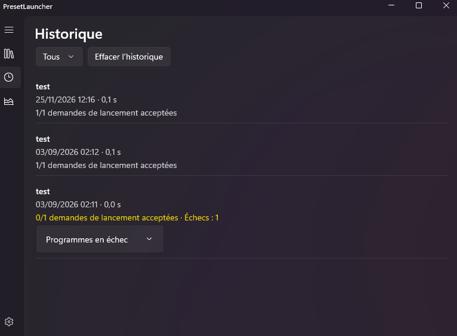

Presets
Groupes d’applications et commandes de lancement.

Capture indisponible
PresetLauncher sous Windows.
Groupes d’applications et commandes de lancement.
Capture indisponible
Demandes de lancement et programmes en échec.

Capture indisponible
Apparence, confirmations, données et mises à jour.

Capture indisponible